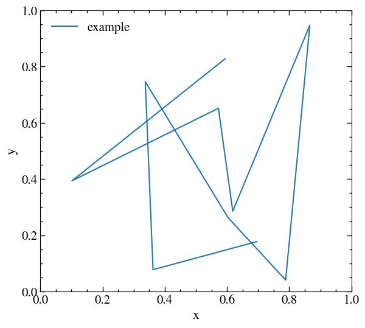

PyPlotUtility.jl
This package provides a number of efficiency models for Diffuse Shock Acceleration (DSA). It provides a number of functions to calculate what fraction of the energy dissipated at a shock is used to accelerate Cosmic Rays (CRs).
Example
using PyPlot, PyPlotUtility
fig = get_figure()
plot_styling!()
ax = gca()
axis_ticks_styling!(ax)
ax.set_xlim([0.0, 1.0])
ax.set_ylim([0.0, 1.0])
ax.set_xlabel("x")
ax.set_ylabel("y")
plot(rand(10), rand(10), label="example")
legend(frameon=false)
savefig("example.png", bbox_inches="tight")